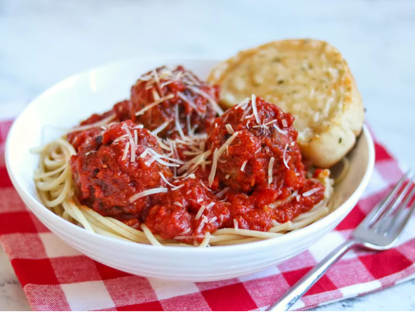

Meatballs

Description
It's everyone's favorite spherical protein food - Meatballs.
Need to amp up your pasta dish? Check.
Need a type of sub that has tomato sauce and provolone cheese? Check.
How about a quick protein snack you can down in a bite or two? Check.
Meatballs are an absolute classic and this is my simple and easy to follow recipe to make them super delicious!
Ingredients
I use a glass pyrex dish to cook the meatballs in, but a baking sheet also works. You will need a medium mixing bowl.
- 1 lb. protein of choice. (ground beef, ground turkey, ground chicken)
- 1 egg
- 1/2 cup grated parmesan cheese
- 4 teaspoons garlic powder, or to taste
- 2 tablespoons italian seasoning, or to taste
- 2 teaspoons olive oil (optional)
- 1 28oz. can of sauce (prepared and seasoned as desired)
Steps
- Preheat the oven to 385 degrees before doing anything else.
- Throw all of the ingreidents, except the sauce, into a mixing bowl and mix with clean, washed hands. Make sure everything in the bowl is well incorporated
- Grab your cooking sheet of choice and either oil or pan spray it, then roll meatballs into sizing of choice and spread evenly on cooking dish. (I do larger meatballs of subs, but smaller for pasta)
- Throw into oven (once done preheating) for about ~20-25 minutes. (depends on size of meatballs, but always start with less time)
- When meatballs are cooking, start your sauce of choice on low heat and season/prepare as desired if not already done.
- Once meatballs are cooked with desired color and firmness, throw into sauce.
- Serve with grated parmesan cheese on top. Enjoy!
Back to Recipes